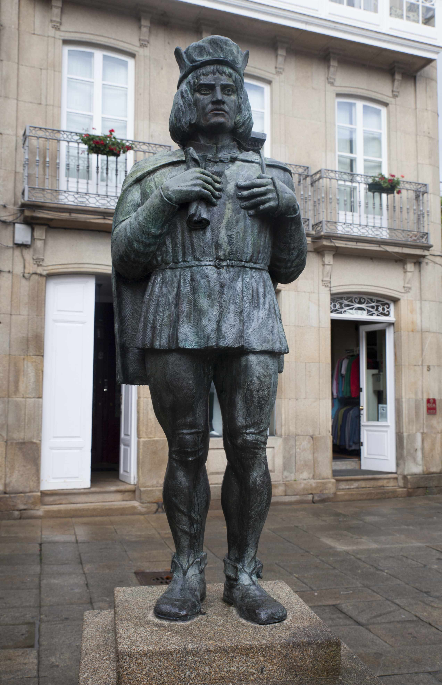
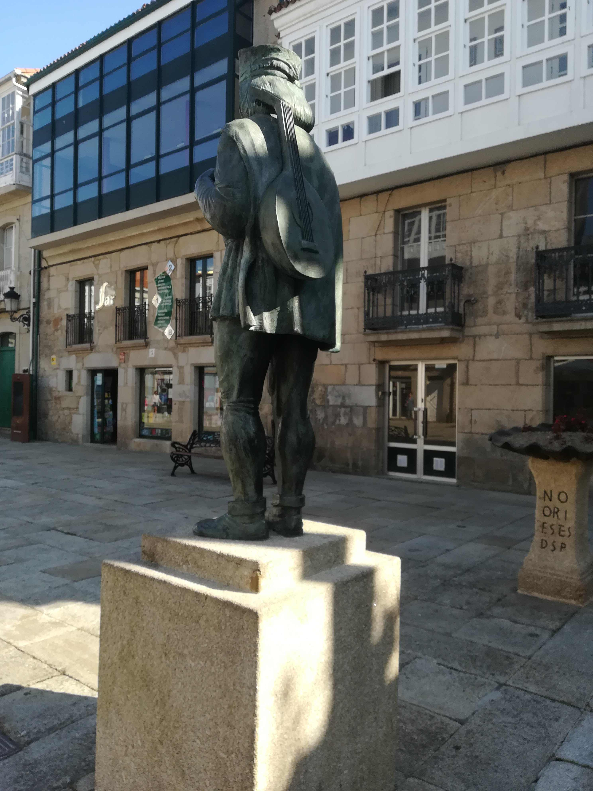
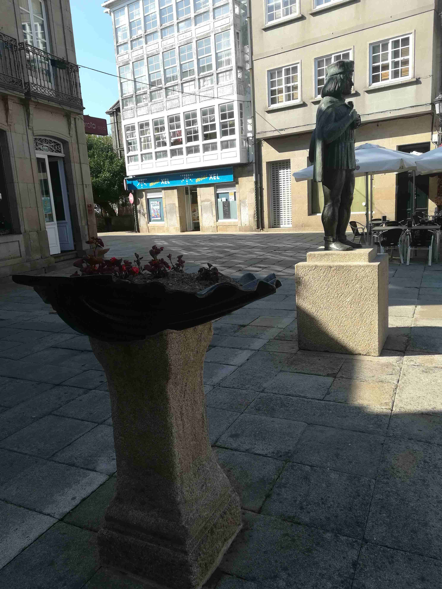
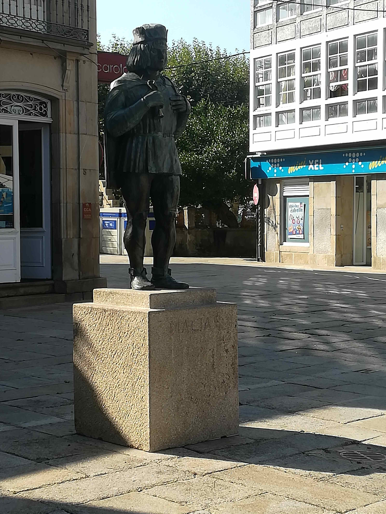

| Lugar | Praza de Macías |
| Parroquia | Padrón (Santiago) |
| Coordenadas | 42.73808114 / -8.66101632 |
| Inauguración | 24 xullo 2001 |
| Autor | Ramón Conde |
| Orzamento | 5.000.000 pesetas (3.000.000 pesetas foron sufragados pola Deputación da Coruña e 2.000.000 pesetas polo Concello de Padrón) |




Descrición
A praza na que se atopa a escultura foi inaugurada como tal o 16 de xullo de 1920,. Naquel momento colocouse o pedestal no que se colocaría a figura escultórica. Non é ata o ano 2001 cando se erixe a escultura na honra do trovador medieval nado en Padrón, Macías O Namorado mais as oito réplicas de Pedrón decoradas con unha xardiñeira que máis adiante se cambiarían de ubicación.
A Macías atribúenselle 21 poemas do Cancioneiro de Baena (Madrid, 1851) e (Leipzip, 1860): “Cautivo da miña tristura”, “Amor cruel e brioso”, “Senhora en quien fiança”, “Provei de buscar mesura”, “Con tan alto poderío”. A súa vida está vencellada a unha tráxica historia de amor.